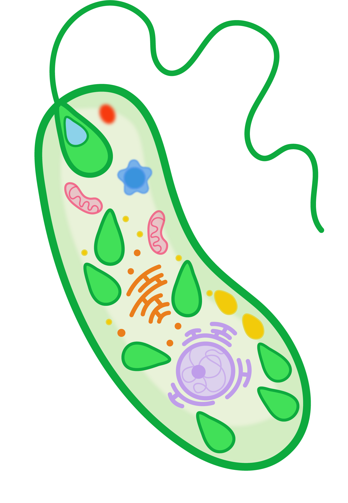

Cuando inicié mi emprendimiento, tenía algo muy claro: quería conectar con las personas a través del arte y mostrar el mundo de los microorganismos desde una mirada creativa e ilustrativa.
El inicio de mi conexión con las microalgas
En 2022, mientras cursaba materias relacionadas con microbiología industrial, ambiental y bioprocesos, un tema comenzó a resonar constantemente en mi cabeza: microalgas.
Ya tenía algunas nociones sobre ellas: sabía que eran fotosintéticas y responsables de los tonos verde y azul en ambientes acuáticos. No estaba equivocada, pero su papel en los ecosistemas es mucho más profundo.
Un universo microscópico y poderoso
En mis clases descubrí que las microalgas son organismos versátiles y antiguos. Según su clasificación taxonómica, son eucariotas que pueden ser unicelulares o pluricelulares, siempre fotosintéticos. Muchos estudios revelan que algunas especies son capaces de absorber compuestos complejos, como metales pesados, y transformarlos en sustancias menos dañinas para el ambiente. Por eso, se consideran biorremediadores naturales.

Una lección de humildadConocer todo esto cambió mi forma de ver la vida. Me llevó a cuestionarme: ¿por qué los humanos nos creemos superiores a los microorganismos? Desde entonces, entendí que todos los seres vivos somos útiles y necesarios.
Todos somos útiles y necesarios.
A veces, en nuestra vida somos como una Chlamydomonas: grandes, admiradas, un modelo para otros. Otras veces somos como una Euglena: versátiles, adaptándonos a la luz o la sombra, a la abundancia o la carencia. Y en algunos momentos, somos como una Micromonas: pequeñas, sencillas, pero igual de valiosas.
¿Por qué mi logo es una microalga?
Mi logo es una microalga caricaturesca, en tonos verdes y azulados. Con mis ilustraciones quiero que quien las vea se sienta conectado con la naturaleza y reconozca a las microalgas como organismos fascinantes y esenciales.
Porque ellas son mucho más que seres diminutos: son el pulmón invisible del planeta.

💚 Gracias por estar aquí y por leerme.
Si te gustó este artículo, compártelo con alguien curioso.